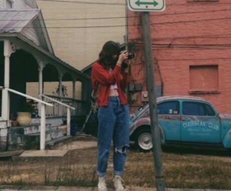
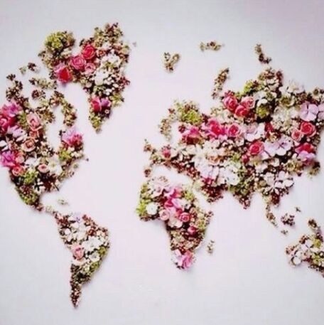

Querido Rey de la Cabina:
Voy a hacer que mis dedos transparentes
aprendan a tejer la primavera.
Y que el ruido de mis pasos
se funda con el de cada
gota de lluvia.
Tú
(tan alto)
que ves todos los techos ,
todas las cabezas y los hombros,
y la carga que llevan los camiones.
El lado de arriba de las nubes.
Más cerca
de los hornos del Sol,
pero más frío,
(¿es cierto que
hay basura en el cielo?
¿No debería haber barcos viejos
y collares de carros oxidados
y plumas del pez azul?).
Tú,
que ves trabajar a los satélites,
vanos e imprescindibles,
(¿es verdad que tu grúa una pantalla de televisión?
¿Y que una cámara en la punta de su lanza
transmite, sólo para ti,
un primer plano de lo que debes levantar y dónde dejarlo?).
Te ofrezco (Topo de las Alturas)
yo
que veo
el lado de abajo,
el piso de todas las casas,
las cañerías que alimentan la ciudad,
los túneles ciegos del metro,
las suelas de los caminantes,
la línea que trazan las ruedas de bicicleta,
te propongo
llevar mi cámara a mano, a cada lado que vaya
(¿con un casco en mi cabeza?)
y filmar el mundo
para que llegue a la pequeña televisión de tu grúa,
en blanco y negro (imagino que es una pequeña pantalla
en blanco y negro).
Para darle mis ojos , el ojo de mi cámara de mano,
al tímido ojo cíclope de tu grúa (tu unicornio amarillo).
Tú verás llegar los vientos,
yo te mostraré la escalera del departamento hasta la calle
(enfocaré el buzón lleno de propagandas),
la hamburguesería de la esquina.
Tú verás llegar los vientos.
Rey de los Caracoles del Cielo,
verás, en blanco y negro, la parada del 12,
la panadería, y la señora del pelo teñido
y los labios gruesos y mal pintados,
como si en la imprenta no hubieran hecho coincidir
los colores,
pero no la hicieron en una imprenta,
(pero no coinciden sus colores).
Con su delantal verde claro, casi de hospital,
tomando los panes pero mirando con desconfianza a la cámara.
El kiosco de periódicos, las baldosas rotas,
la estación de tren,
el alumbrado que se enciende, como un montón
de gallinas confundidas, por esas placas fotosensibles,
aun cuando no sea el atardecer.
El río, la costanera.
El humo que sale de los restaurantes y las tintorerías,
el de los autobuses, las fábricas y las coladeras,
el del aliento por la mañana (hace un poco de frio),
para que compares, Rey de la Cabina,
y sientas que estás preparado, como cuando
estudiabas los mapas,
(aunque los mapas mientan y nunca se puedan
estar preparados).
Todo lo transmitiré para el ojo de tu grúa
(si la técnica se complica, ahora que lo pienso
es muy probable, te enviaré la cinta).
También te enviaré un mapa, o muchos,
para que los estudies
y te sientas preparado.
Uno
desde el aeropuerto hasta casa (imprescindible aunque
no llegarás en avión,
porque todos tenemos algo de turistas).
Uno
desde la puerta del edificio
hasta la parada del 12, pasando por la panadería
(con detalles sobre como evitar las conversaciones de
“labios corridos”).
Uno
desde la cama hasta la sala.
Uno
desde la cocina hasta la cama,
(hagamos un zoom más preciso:
desde tu lado de la cama hasta el otro lado
sin doblar las sábanas, o doblándolas).
Desde mi lado de la cama
hasta el reino de tu otro lado,
para que regreses todas las veces que quieras
sin temor a perder el camino,
(o a que el camino te suelte la mano y te pierda).
Finalmente, uno,
que salga de ti y regrese a ti,
y recorra el mundo
(con escala en un puerto muy parecido
a mis pechos, si me permites),
pero, en todo caso, en los hilos de tus caminos
se disparen como cañitas voladoras,
como una bandada de fuegos artificiales,
y que nunca, nunca te pase
que no sepas regresar,
aunque regresar quede más adelante y no más atrás.
Querido amigo ( ya te explique, ¿recuerdas?),
dile a ese terrible perro guardián (que estoy segura
duerme en tu falda)
que lo saludan huesos escondidos en cinco continentes.
Paloma

